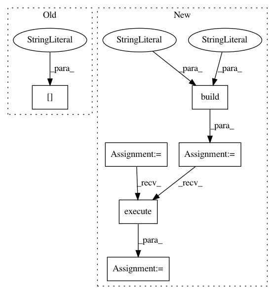

2e5d57c30af1f23a6369dda419ad60ce991093fd,bigquery/samples/async_query.py,,main,#Any#Any#Any#Any#Any#,44
Before Change
num_retries)
poll_job(service,
query_job["jobReference"]["projectId"],
query_job["jobReference"]["jobId"],
interval,
num_retries)
After Change
credentials = GoogleCredentials.get_application_default()
// Construct the service object for interacting with the BigQuery API.
bigquery = discovery.build("bigquery", "v2", credentials=credentials)
// [END build_service]
// Submit the job and wait for it to complete.
query_job = async_query(
bigquery,
project_id,
query_string,
batch,
num_retries)
poll_job(bigquery, query_job)
// Page through the result set and print all results.
page_token = None
while True:
page = bigquery.jobs().getQueryResults(
pageToken=page_token,
**query_job["jobReference"]).execute(num_retries=2)
print(json.dumps(page["rows"]))
page_token = page.get("pageToken")
if not page_token:
break
// [END run]
In pattern: SUPERPATTERN
Frequency: 3
Non-data size: 6
Instances
Project Name: GoogleCloudPlatform/python-docs-samples
Commit Name: 2e5d57c30af1f23a6369dda419ad60ce991093fd
Time: 2015-09-15
Author: jon.wayne.parrott@gmail.com
File Name: bigquery/samples/async_query.py
Class Name:
Method Name: main
Project Name: GoogleCloudPlatform/ml-on-gcp
Commit Name: 2ad97e185a4e817dfe1b130440ce15818326cbf8
Time: 2018-01-24
Author: yuhanliu@google.com
File Name: hpsearch/parallel_search.py
Class Name:
Method Name:
Project Name: GoogleCloudPlatform/python-docs-samples
Commit Name: 2e5d57c30af1f23a6369dda419ad60ce991093fd
Time: 2015-09-15
Author: jon.wayne.parrott@gmail.com
File Name: bigquery/samples/sync_query.py
Class Name:
Method Name: main